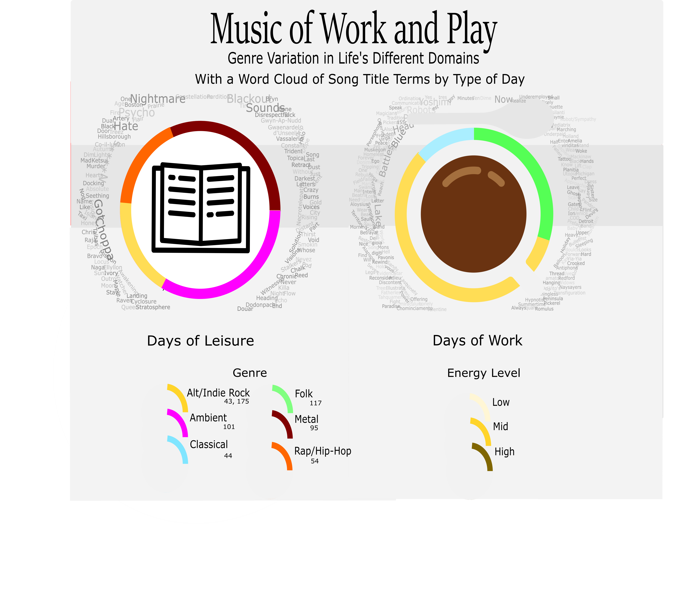

Over the course of my semester, I focused on questions related to how people listen to music. First, I looked at my own music listening patterns. Here is a sample of my data collections spreadsheet. As I finished up my week, two days of which I listened to music while working as a barista and three of which I listened to music while doing homework, I began to notice a pattern. A sharp difference arose in the kind of music I listened to based on whether I was playing music for other people versus playing it for myself. I have developed the hypothesis that this variation in the type of music for which i have a preference is directly influenced by my own perceptions of what music is more or less acceptable for a given space.
Anexample of my first day of data collection. Sufjan Stevens is a calm folk artist.
Here we can see a visual demonstration. There are two circle charts indicating music listened to on days working and on days doing homework. Each genre, defined in a simplified way for the purposes of this demonstration, is encoded by a hue. My average mental energy for each day is approximated by the lightness of the hues in each circle. Each chart is surrounded by a word cloud that includes the keywords aggregated from each collection of song titles.
On days that I worked, I played softer music overall, mainly gravitating toward folk, softer indie rock like Emo, and Gregorian chants. While doing homework, the music I listened to varied between different kinds of metal, odd indie rock, aggressive rap music, and industrial/drone tracks. It is possible that this correlates more to my mood in the different situations(this aspect of the data can be seen at least partly by my measurement of my mental energy through these times), but I think it is more likely the environment that has the final say, because I recall many times that I have wanted to play the less calm music and have chosen not to due to a desire to keep customers comfortable.
I also noticed a drastic difference in the emotional and aesthetic impression given by keywords in the titles of tracks between the two kinds of day in my data collection. For days when I was not working, title keywords trended toward darker imagery, such as "Choppa [chopper]," "murder," "hate," and "nightmare." For days when I was working, words trended toward more calm, brighter images, like "lake," "blue," and "Persephone."
The sum of all this data is an indication of how playlists can be shaped by the goals of the physical environments in which they are played, or for which they are made. Some of the data in this period of data collection was taken from auto-generated playlists, and some from my intentional decisions based on my music library. The ability for auto-generated music playlists to closely match those that a human would make leads into my next topic with regards to music and digital media.
My Explained Video: An Exploration of Playlist Creation Algorithms
In the next phase of our semester, I examined a specific facet of music playing that I encountered in some parts of my data collection: the ways that Spotify generates playlists based on tracks that it thinks the listener will enjoy. I did a brief survey of some of the kinds of algorithms programs like Spotify use toward this end, and along with the comparative advantages of the various algorithms, I outlined some of the inherent biases in this process, such as toward popularity.
The aggregation of research that I created in this video indicates that the process of approximating human music playlist generation through the programming of algorithms is extremely complex, with it being very easy for the algortihm to rely on one factor too heavily for it to closely approaximate what a human would do in the same situaion. Between the varied group of algortihms that I outline, however, a programmer choosing which to use could feasibly select whichever is biased in a way that the programmer views as less detrimental to the overall goal of the music software.
{kind=link}
{kind=link}